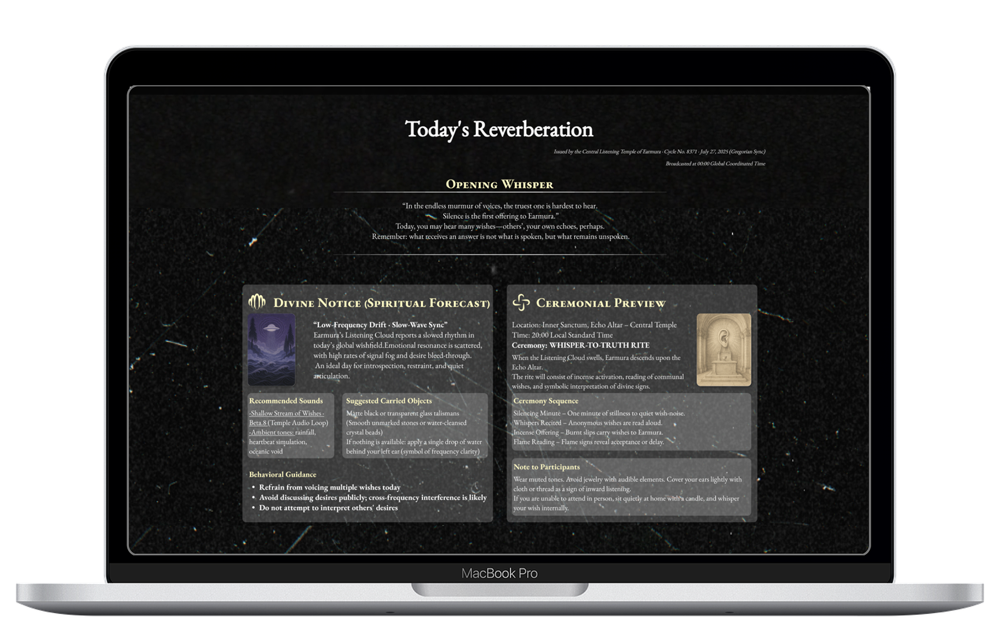

Interactive website
Designed and built the live portal with HTML, CSS, JavaScript and Web Audio API interaction.
EARMURA is an interactive narrative project delivered as a live website and a narrative video. The website lets users enter the story through voice-based interaction, while the film extends the same world into a cinematic experience.
Personal Project / Interactive Narrative / Web Prototype / System Design
Website prototype, interaction flow, narrative structure, visual direction, Web Audio interaction and front-end implementation
1 month / 2025
Live interactive website, narrative film, interface visuals and interaction flow
HTML, CSS, JavaScript, Web Audio API, narrative systems and audiovisual direction
Working prototype and narrative film completed; formal user testing was not part of this one-month prototype sprint.
The portal turns the project from a static concept into an interactive experience. Users move through the narrative through web pages, voice input, waveform feedback and response states.

The narrative video works as the second final output. It gives context to the website experience, showing the atmosphere, roles and consequences that the interface only hints at.
My role covered the full experience: shaping the narrative premise, designing the web interaction, building the front-end prototype and directing the visual rhythm of the website and film.
Designed and built the live portal with HTML, CSS, JavaScript and Web Audio API interaction.
Defined the user-facing story flow, roles and response moments that guide the website experience.
Used the film to communicate atmosphere, stakes and the broader world behind the interface.
Translated narrative rules into clear interface states so the experience could function as a coherent prototype.